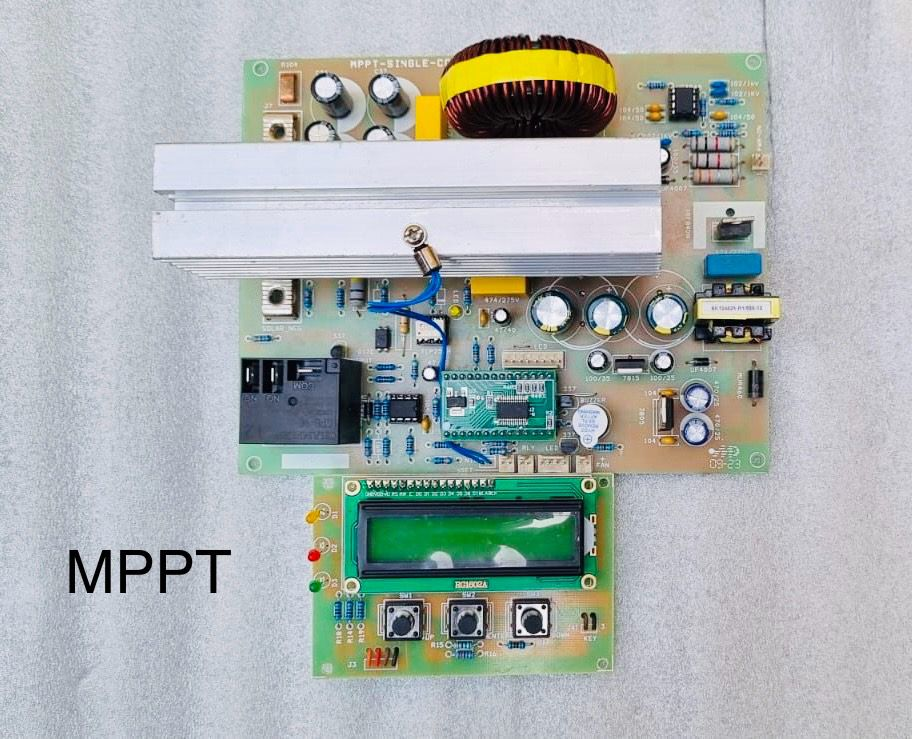

Engineering Reliable Power Systems
Engineering Reliable Power Systems
High-efficiency maximum power point tracking for real solar systems.

VQNIX MPPT platforms are engineered for wide voltage ranges, high current handling, and stable control under dynamic irradiance.